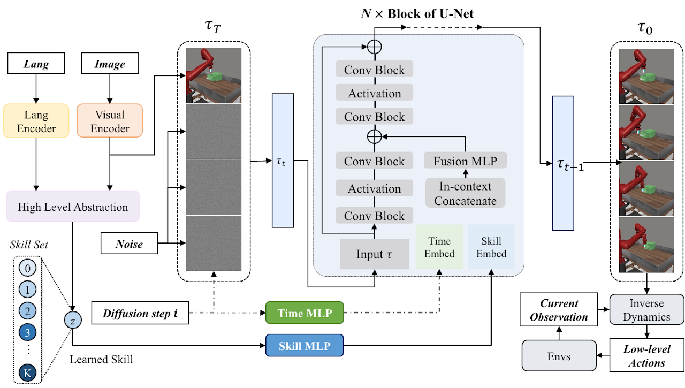

SkillDiffuser: Interpretable Hierarchical Planning via Skill Abstractions in Diffusion-Based Task Execution
- 1The University of Hong Kong,
- 2UC Berkeley,
- 3Shanghai AI Laboratory
†Corresponding authors
-
 Paper
Paper
-
 Code
Code
Abstract
Diffusion models have demonstrated strong potential in robotic trajectory planning. However, generating coherent and long-horizon trajectories from high-level instructions remains challenging, especially for complex tasks requiring multiple sequential skills. We propose SkillDiffuser, an end-to-end hierarchical planning framework integrating interpretable skill learning with conditional diffusion planning to address this problem. At the higher level, the skill abstraction module learns discrete, human-understandable skill representations from visual observations and language instructions. These learned skill embeddings are then used to condition the diffusion model to generate customized latent trajectories aligned with the skills. It allows for generating diverse state trajectories that adhere to the learnable skills. By integrating skill learning with conditional trajectory generation, SkillDiffuser produces coherent behavior following abstract instructions across diverse tasks. Experiments on multitask robotic manipulation benchmarks like Meta-World and LOReL demonstrate state-of-the-art performance and human-interpretable skill representations from SkillDiffuser.
Framework of SkillDiffuser

Overall framework of SkillDiffuser. It's a hierarchical planning model that leverages the cooperation of interpretable skill abstractions at the higher level and a skill conditioned diffusion model at the lower level for task execution in a multi-task learning environment. The high-level skill abstraction is achieved through a skill predictor and a vector quantization operation, generating sub-goals (skill set) that the diffusion model employs to determine the appropriate future states. Future states are converted to actions using an inverse dynamics model. This unique fusion enables a consistent underlying planner across different tasks, with the variation only in the inverse dynamics model.
Results
Task-wise Performance on LOReL Dataset
Fig.1 Task-wise success rates (in \%) on LOReL Sawyer Dataset.
Fig.2 Rephrasal-wise success rates (in \%) on LOReL Sawyer Dataset.
As can be seen from the figures, especially from Fig. 2, our method's average performance on 5 rephrases is nearly 10 percentage points higher than the previous SOTA, which demonstrates its strong robustness against ambiguous language instructions.
Task-wise Performance on Meta-World Dataset
We also provide the task-wise success-rates on Meta-World MT10 dataset in Fig. 4, achieved by Flat R3M, Language-conditioned Diffuser and our SkillDIffuser.
Fig.3 Partially visual observations of all the 10 tasks in Meta-World MT10 Dataset.
Fig.4 Task-wise success rates (in %) on Meta-World MT10 Dataset.
Visualizations
Word Cloud of Learned Skills
The model has successfully mastered multiple key skills (we pick 8 of them for visualization here). These skills demonstrate strong robustness to ambiguous language instructions. For instance, in Fig. 5, skill 4 effectively abstracts the skill of "open a drawer'" from ambiguous expressions such as "open a container", "pull a dresser", "pull a drawer" and random combinations of these words. Similarly, skill 6 extracts the skill of "turn a faucet to the left". This analysis indicates our method's resilience to varied and poorly defined language inputs, confirming our SkillDiffuser can competently interpret and act upon a wide range of linguistic instructions, even those that are ambiguous or incomplete.

Fig.5 Word cloud of learned skills in LOReL Sawyer Dataset. We show eight of them here with the size corresponding to the word frequency in one skill.

Fig.6 Word cloud of learned skills in Meta-World MT10 Dataset. We show eight of them here with the size corresponding to the word frequency in one skill.
Heat Map of Word Frequency

Fig.7 Visualization of skill heat map on LOReL.
We show the visualization results of skill set on LOReL Sawyer Dataset in Fig. 7. The visualization results show that out of a 20-size skill-set, our SkillDiffuser learned 11 skills (e.g. shut close container drawer, pull drawer handle etc.) notably distinguished by their unique word highlights. The results demonstrate strong skill abstraction abilities. For example, the skill "shut close container drawer" abstracts different expressions like "shut drawer", "shut container" into one skill semantic.
Bibtex
@article{liang2023skilldiffuser,
title={SkillDiffuser: Interpretable Hierarchical Planning via Skill Abstractions in Diffusion-Based Task Execution},
author={Zhixuan Liang and Yao Mu and Hengbo Ma and Masayoshi Tomizuka and Mingyu Ding and Ping Luo},
journal={arXiv preprint arXiv:2310.08387},
year={2023},
}